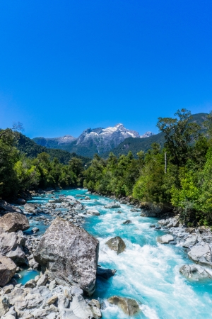

Have An Adventure
Make Memories with Dry Oar

Get ready to embark on the ultimate rafting and kayaking adventure with our expert guides and crew. From the first safety briefing to the last riverside pull in, you’ll enjoy epic scenery, whitewater thrills, gourmet camp cookouts, riverside hikes, and a chance to unplug and get away from it all in nature. Since our first commercial rafting trip in 1973, we’ve run thousands of rafting and kayaking adventures around the world—and are leaders in water-based adventures. So, whether you’re a novice on the water or an experienced paddler looking for a new adventure, we have the river rafting and kayaking tour for you.
River rafting tours give you the chance to try something new every day. Relax in the oar boat, join the crew in the paddle boat, or go solo in an inflatable kayak or on a stand-up paddle board. Whichever you try, you’ll be assured of top-end equipment and a thrilling experience
Our rafting adventures are guided entirely by experts, professional river guides who are highly trained in safety procedures and follow Leave No Trace principles. As well as being fun and friendly, they’ll teach you how to paddle safely, guide you on riverside trails, set up your tents and sleeping equipment, impress you with their camp cooking, and make your trip truly special.